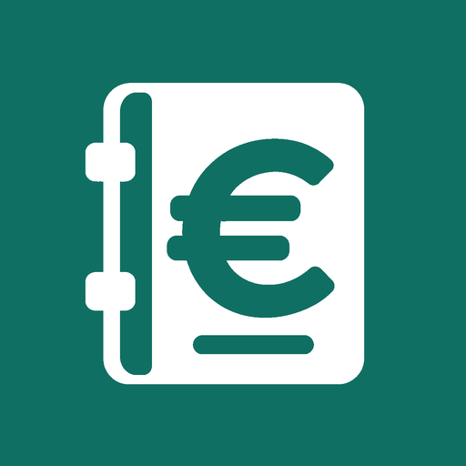

Control Autónomo
Privacidad de Control Autónomo
Actualizada: 16 de octubre de 2026.
Responsable: Raúl Sánchez Perea. Contacto: raulito-sp@hotmail.com.
Datos y finalidad
En modo local, los movimientos, caja/banco, nombre del negocio, empleados, costes de personal, vacaciones, cobros pendientes, clientes, catálogo, citas de agenda, ventas, stock y cierres del TPV, datos del negocio, logo y ajustes se guardan en este dispositivo. Al crear una cuenta, Firebase Authentication gestiona el correo, las credenciales y el identificador de usuario. Al sincronizar, Firebase Cloud Firestore almacena tus movimientos, importes, conceptos, fechas, empleados, costes de personal, vacaciones, cobros pendientes, clientes, catálogo, citas de agenda, ventas, stock y cierres del TPV, datos del negocio, logo, ajustes y revisiones para recuperar tu copia y usarla en otros dispositivos.
La cuenta y la sincronización son opcionales. Tratamos estos datos para prestar el servicio que solicitas. Los mensajes de soporte se utilizan para atender tu consulta y comprobar la titularidad de una cuenta cuando solicitas su eliminación.
Proveedores y seguridad
Usamos Firebase, de Google, para autenticación y almacenamiento. La base de datos de este proyecto está configurada en Europa (eur3). Firebase Authentication se presta desde Estados Unidos; las transferencias internacionales se rigen por las condiciones y garantías aplicables de Google. Puedes consultar la información de privacidad de Firebase. Firebase también trata direcciones IP y datos técnicos del navegador o dispositivo para prestar el servicio y prevenir abusos. Las comunicaciones con Firebase utilizan HTTPS. No incorporamos anuncios ni el SDK de Google Analytics a esta versión.
La copia local se guarda en el almacenamiento de la aplicación; el PIN opcional es un bloqueo de acceso, no cifra los archivos. Protege tu dispositivo y las copias JSON o PDF que exportes. No incluyas información sensible de terceros en los conceptos si no es necesaria.
Las páginas públicas de soporte y privacidad se alojan en GitHub Pages, cuyo proveedor puede registrar datos técnicos de las visitas, como la dirección IP, para servir las páginas y proteger su infraestructura.
Suscripción Pro
Google Play gestiona el pago, la prueba cuando esté disponible, la renovación y la cancelación de Pro. No recibimos los datos de tu tarjeta. Para verificar el acceso usamos tu identificador de cuenta de Control Autónomo, un identificador seudonimizado enviado a Google Play, el producto contratado, el estado y la caducidad de la suscripción y su token de compra. El servidor de verificación utiliza Firebase y la API de Google Play. Estos datos se usan para prestar Pro, restaurar compras y evitar que una compra se vincule a otra cuenta.
Guardamos la vinculación de la compra y los permisos de acceso hasta la eliminación de la cuenta. En el dispositivo puede conservarse un acceso ya verificado durante un máximo de 24 horas, limitado por la caducidad comunicada por Google. La eliminación de la cuenta de Control Autónomo no cancela por sí misma la suscripción: cancélala desde Google Play si no deseas que se renueve. Google conserva sus registros de pagos según sus propias condiciones.
Conservación y eliminación
Los datos sincronizados permanecen hasta que solicites su eliminación. Puedes solicitar borrar la cuenta, permisos Pro, vinculaciones de compras y todos sus datos de la nube escribiendo desde el correo de la cuenta a raulito-sp@hotmail.com con el asunto «Eliminar cuenta Control Autónomo». Verificaremos la titularidad y atenderemos la solicitud en un plazo de 30 días, salvo que exista una obligación legal de conservación, que te explicaremos.
La solicitud se atiende manualmente. Abrir el correo o cerrar sesión no elimina datos. Los archivos que hayas exportado, compartido o guardado en otros dispositivos no se borran a distancia. Para eliminar las copias locales, borra el almacenamiento de la app en los ajustes de Android en cada dispositivo y elimina los archivos exportados que ya no quieras conservar.
Según la documentación de Firebase, los registros de IP de Authentication se conservan unas semanas y la eliminación de información de autenticación de sus sistemas activos y copias internas puede tardar hasta 180 días después de solicitar el borrado. Los mensajes de soporte se conservan mientras se gestiona la consulta o solicitud y se eliminan después de cerrarla, salvo una obligación legal que te comunicaremos.
Tus derechos
Puedes solicitar acceso, rectificación, supresión, portabilidad, oposición o limitación escribiendo al correo de contacto. También puedes presentar una reclamación ante la Agencia Española de Protección de Datos. Puedes exportar tus datos desde Ajustes. La app no está dirigida a menores.